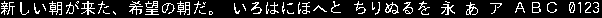

lgfxJapanGothic_16
lgfxJapanGothic · u8g2 · ja · 4422 chars

| flash | 159287 B |
| height | 16 |
| baseline | 14 |
| xAdvance | 24 |
| yAdvance | 16 |
| width | 24 |
| mono | True |
Unicode Blocks
| Basic Latin | 94 |
| Latin-1 Supplement | 94 |
| Other BMP | 345 |
| General Punctuation | 14 |
| CJK Symbols and Punctuation | 35 |
| Hiragana | 93 |
| Katakana | 96 |
| CJK Unified Ideographs | 3487 |
| Halfwidth and Fullwidth Forms | 164 |
Covered Characters
Use browser find to search this page. Control and space characters are shown as labels.
Basic Latin
[space]U+0020 !U+0021 "U+0022 #U+0023 $U+0024 %U+0025 &U+0026 'U+0027 (U+0028 )U+0029 *U+002A +U+002B ,U+002C -U+002D .U+002E /U+002F 0U+0030 1U+0031 2U+0032 3U+0033 4U+0034 5U+0035 6U+0036 7U+0037 8U+0038 9U+0039 :U+003A ;U+003B <U+003C =U+003D >U+003E ?U+003F @U+0040 AU+0041 BU+0042 CU+0043 DU+0044 EU+0045 FU+0046 GU+0047 HU+0048 IU+0049 JU+004A KU+004B LU+004C MU+004D NU+004E OU+004F PU+0050 QU+0051 RU+0052 SU+0053 TU+0054 UU+0055 VU+0056 WU+0057 XU+0058 YU+0059 ZU+005A [U+005B \U+005C ]U+005D ^U+005E `U+0060 aU+0061 bU+0062 cU+0063 dU+0064 eU+0065 fU+0066 gU+0067 hU+0068 iU+0069 jU+006A kU+006B lU+006C mU+006D nU+006E oU+006F pU+0070 qU+0071 rU+0072 sU+0073 tU+0074 uU+0075 vU+0076 wU+0077 xU+0078 yU+0079 zU+007A {U+007B |U+007C }U+007D ~U+007E
Latin-1 Supplement
¡U+00A1 ¢U+00A2 £U+00A3 ¤U+00A4 ¥U+00A5 ¦U+00A6 §U+00A7 ¨U+00A8 ©U+00A9 ªU+00AA «U+00AB ¬U+00AC U+00AD ®U+00AE ¯U+00AF °U+00B0 ±U+00B1 ²U+00B2 ³U+00B3 ´U+00B4 ¶U+00B6 ·U+00B7 ¸U+00B8 ¹U+00B9 ºU+00BA »U+00BB ¼U+00BC ½U+00BD ¾U+00BE ¿U+00BF ÀU+00C0 ÁU+00C1 ÂU+00C2 ÃU+00C3 ÄU+00C4 ÅU+00C5 ÆU+00C6 ÇU+00C7 ÈU+00C8 ÉU+00C9 ÊU+00CA ËU+00CB ÌU+00CC ÍU+00CD ÎU+00CE ÏU+00CF ÐU+00D0 ÑU+00D1 ÒU+00D2 ÓU+00D3 ÔU+00D4 ÕU+00D5 ÖU+00D6 ×U+00D7 ØU+00D8 ÙU+00D9 ÚU+00DA ÛU+00DB ÜU+00DC ÝU+00DD ÞU+00DE ßU+00DF àU+00E0 áU+00E1 âU+00E2 ãU+00E3 äU+00E4 åU+00E5 æU+00E6 çU+00E7 èU+00E8 éU+00E9 êU+00EA ëU+00EB ìU+00EC íU+00ED îU+00EE ïU+00EF ðU+00F0 ñU+00F1 òU+00F2 óU+00F3 ôU+00F4 õU+00F5 öU+00F6 ÷U+00F7 øU+00F8 ùU+00F9 úU+00FA ûU+00FB üU+00FC ýU+00FD þU+00FE ÿU+00FF
Other BMP
ΑU+0391 ΒU+0392 ΓU+0393 ΔU+0394 ΕU+0395 ΖU+0396 ΗU+0397 ΘU+0398 ΙU+0399 ΚU+039A ΛU+039B ΜU+039C ΝU+039D ΞU+039E ΟU+039F ΠU+03A0 ΡU+03A1 ΣU+03A3 ΤU+03A4 ΥU+03A5 ΦU+03A6 ΧU+03A7 ΨU+03A8 ΩU+03A9 αU+03B1 βU+03B2 γU+03B3 δU+03B4 εU+03B5 ζU+03B6 ηU+03B7 θU+03B8 ιU+03B9 κU+03BA λU+03BB μU+03BC νU+03BD ξU+03BE οU+03BF πU+03C0 ρU+03C1 σU+03C3 τU+03C4 υU+03C5 φU+03C6 χU+03C7 ψU+03C8 ωU+03C9 ЁU+0401 АU+0410 БU+0411 ВU+0412 ГU+0413 ДU+0414 ЕU+0415 ЖU+0416 ЗU+0417 ИU+0418 ЙU+0419 КU+041A ЛU+041B МU+041C НU+041D ОU+041E ПU+041F РU+0420 СU+0421 ТU+0422 УU+0423 ФU+0424 ХU+0425 ЦU+0426 ЧU+0427 ШU+0428 ЩU+0429 ЪU+042A ЫU+042B ЬU+042C ЭU+042D ЮU+042E ЯU+042F аU+0430 бU+0431 вU+0432 гU+0433 дU+0434 еU+0435 жU+0436 зU+0437 иU+0438 йU+0439 кU+043A лU+043B мU+043C нU+043D оU+043E пU+043F рU+0440 сU+0441 тU+0442 уU+0443 фU+0444 хU+0445 цU+0446 чU+0447 шU+0448 щU+0449 ъU+044A ыU+044B ьU+044C эU+044D юU+044E яU+044F ёU+0451 €U+20AC ℃U+2103 ℏU+210F ℓU+2113 №U+2116 ℡U+2121 ℧U+2127 ÅU+212B ℵU+2135 ⅓U+2153 ⅔U+2154 ⅕U+2155 ⅠU+2160 ⅡU+2161 ⅢU+2162 ⅣU+2163 ⅤU+2164 ⅥU+2165 ⅦU+2166 ⅧU+2167 ⅨU+2168 ⅩU+2169 ⅰU+2170 ⅱU+2171 ⅲU+2172 ⅳU+2173 ⅴU+2174 ⅵU+2175 ⅶU+2176 ⅷU+2177 ⅸU+2178 ⅹU+2179 ←U+2190 ↑U+2191 →U+2192 ↓U+2193 ⇒U+21D2 ⇔U+21D4 ∀U+2200 ∂U+2202 ∃U+2203 ∇U+2207 ∈U+2208 ∋U+220B √U+221A ∝U+221D ∞U+221E ∟U+221F ∠U+2220 ∥U+2225 ∧U+2227 ∨U+2228 ∩U+2229 ∪U+222A ∫U+222B ∬U+222C ∮U+222E ∴U+2234 ∵U+2235 ∽U+223D ≒U+2252 ≠U+2260 ≡U+2261 ≦U+2266 ≧U+2267 ≪U+226A ≫U+226B ⊂U+2282 ⊃U+2283 ⊆U+2286 ⊇U+2287 ⊥U+22A5 ⊿U+22BF ①U+2460 ②U+2461 ③U+2462 ④U+2463 ⑤U+2464 ⑥U+2465 ⑦U+2466 ⑧U+2467 ⑨U+2468 ⑩U+2469 ⑪U+246A ⑫U+246B ⑬U+246C ⑭U+246D ⑮U+246E ⑯U+246F ⑰U+2470 ⑱U+2471 ⑲U+2472 ⑳U+2473 ─U+2500 ━U+2501 │U+2502 ┃U+2503 ┌U+250C ┏U+250F ┐U+2510 ┓U+2513 └U+2514 ┗U+2517 ┘U+2518 ┛U+251B ├U+251C ┝U+251D ┠U+2520 ┣U+2523 ┤U+2524 ┥U+2525 ┨U+2528 ┫U+252B ┬U+252C ┯U+252F ┰U+2530 ┳U+2533 ┴U+2534 ┷U+2537 ┸U+2538 ┻U+253B ┼U+253C ┿U+253F ╂U+2542 ╋U+254B ■U+25A0 □U+25A1 ▲U+25B2 △U+25B3 ▼U+25BC ▽U+25BD ◆U+25C6 ◇U+25C7 ○U+25CB ◎U+25CE ●U+25CF ◯U+25EF ㈱U+3231 ㈲U+3232 ㈹U+3239 ㊤U+32A4 ㊥U+32A5 ㊦U+32A6 ㊧U+32A7 ㊨U+32A8 ㌃U+3303 ㌍U+330D ㌔U+3314 ㌘U+3318 ㌢U+3322 ㌣U+3323 ㌦U+3326 ㌧U+3327 ㌫U+332B ㌶U+3336 ㌻U+333B ㍉U+3349 ㍊U+334A ㍍U+334D ㍑U+3351 ㍗U+3357 ㍻U+337B ㍼U+337C ㍽U+337D ㍾U+337E ㎎U+338E ㎏U+338F ㎜U+339C ㎝U+339D ㎞U+339E ㎡U+33A1 ㏄U+33C4 ㏍U+33CD 欄U+F91D 廊U+F928 朗U+F929 虜U+F936 類U+F9D0 猪U+FA16 神U+FA19 祥U+FA1A 福U+FA1B 﨟U+FA1F 諸U+FA22 都U+FA26 侮U+FA30 僧U+FA31 勉U+FA33 勤U+FA34 卑U+FA35 嘆U+FA37 器U+FA38 墨U+FA3A 層U+FA3B 悔U+FA3D 憎U+FA3F 懲U+FA40 敏U+FA41 暑U+FA43 梅U+FA44 海U+FA45 渚U+FA46 漢U+FA47 煮U+FA48 琢U+FA4A 碑U+FA4B 社U+FA4C 祉U+FA4D 祈U+FA4E 祐U+FA4F 祖U+FA50 祝U+FA51 禍U+FA52 禎U+FA53 穀U+FA54 突U+FA55 節U+FA56 練U+FA57 繁U+FA59 署U+FA5A 者U+FA5B 臭U+FA5C 著U+FA5F 視U+FA61 謁U+FA62 謹U+FA63 賓U+FA64 贈U+FA65 逸U+FA67 難U+FA68 響U+FA69
General Punctuation
‐U+2010 ―U+2015 ‘U+2018 ’U+2019 “U+201C ”U+201D †U+2020 ‡U+2021 ‥U+2025 …U+2026 ‰U+2030 ′U+2032 ″U+2033 ※U+203B
CJK Symbols and Punctuation
[ideographic space]U+3000 、U+3001 。U+3002 〃U+3003 々U+3005 〆U+3006 〇U+3007 〈U+3008 〉U+3009 《U+300A 》U+300B 「U+300C 」U+300D 『U+300E 』U+300F 【U+3010 】U+3011 〒U+3012 〓U+3013 〔U+3014 〕U+3015 〖U+3016 〗U+3017 〘U+3018 〙U+3019 〜U+301C 〝U+301D 〟U+301F 〠U+3020 〳U+3033 〴U+3034 〵U+3035 〻U+303B 〼U+303C 〽U+303D
Hiragana
ぁU+3041 あU+3042 ぃU+3043 いU+3044 ぅU+3045 うU+3046 ぇU+3047 えU+3048 ぉU+3049 おU+304A かU+304B がU+304C きU+304D ぎU+304E くU+304F ぐU+3050 けU+3051 げU+3052 こU+3053 ごU+3054 さU+3055 ざU+3056 しU+3057 じU+3058 すU+3059 ずU+305A せU+305B ぜU+305C そU+305D ぞU+305E たU+305F だU+3060 ちU+3061 ぢU+3062 っU+3063 つU+3064 づU+3065 てU+3066 でU+3067 とU+3068 どU+3069 なU+306A にU+306B ぬU+306C ねU+306D のU+306E はU+306F ばU+3070 ぱU+3071 ひU+3072 びU+3073 ぴU+3074 ふU+3075 ぶU+3076 ぷU+3077 へU+3078 べU+3079 ぺU+307A ほU+307B ぼU+307C ぽU+307D まU+307E みU+307F むU+3080 めU+3081 もU+3082 ゃU+3083 やU+3084 ゅU+3085 ゆU+3086 ょU+3087 よU+3088 らU+3089 りU+308A るU+308B れU+308C ろU+308D ゎU+308E わU+308F ゐU+3090 ゑU+3091 をU+3092 んU+3093 ゔU+3094 ゕU+3095 ゖU+3096 ゙U+3099 ゚U+309A ゛U+309B ゜U+309C ゝU+309D ゞU+309E ゟU+309F
Katakana
゠U+30A0 ァU+30A1 アU+30A2 ィU+30A3 イU+30A4 ゥU+30A5 ウU+30A6 ェU+30A7 エU+30A8 ォU+30A9 オU+30AA カU+30AB ガU+30AC キU+30AD ギU+30AE クU+30AF グU+30B0 ケU+30B1 ゲU+30B2 コU+30B3 ゴU+30B4 サU+30B5 ザU+30B6 シU+30B7 ジU+30B8 スU+30B9 ズU+30BA セU+30BB ゼU+30BC ソU+30BD ゾU+30BE タU+30BF ダU+30C0 チU+30C1 ヂU+30C2 ッU+30C3 ツU+30C4 ヅU+30C5 テU+30C6 デU+30C7 トU+30C8 ドU+30C9 ナU+30CA ニU+30CB ヌU+30CC ネU+30CD ノU+30CE ハU+30CF バU+30D0 パU+30D1 ヒU+30D2 ビU+30D3 ピU+30D4 フU+30D5 ブU+30D6 プU+30D7 ヘU+30D8 ベU+30D9 ペU+30DA ホU+30DB ボU+30DC ポU+30DD マU+30DE ミU+30DF ムU+30E0 メU+30E1 モU+30E2 ャU+30E3 ヤU+30E4 ュU+30E5 ユU+30E6 ョU+30E7 ヨU+30E8 ラU+30E9 リU+30EA ルU+30EB レU+30EC ロU+30ED ヮU+30EE ワU+30EF ヰU+30F0 ヱU+30F1 ヲU+30F2 ンU+30F3 ヴU+30F4 ヵU+30F5 ヶU+30F6 ヷU+30F7 ヸU+30F8 ヹU+30F9 ヺU+30FA ・U+30FB ーU+30FC ヽU+30FD ヾU+30FE ヿU+30FF
CJK Unified Ideographs
一U+4E00 丁U+4E01 七U+4E03 万U+4E07 丈U+4E08 三U+4E09 上U+4E0A 下U+4E0B 不U+4E0D 与U+4E0E 丑U+4E11 且U+4E14 世U+4E16 丘U+4E18 丙U+4E19 丞U+4E1E 両U+4E21 並U+4E26 中U+4E2D 串U+4E32 丸U+4E38 丹U+4E39 主U+4E3B 丼U+4E3C 乃U+4E43 久U+4E45 之U+4E4B 乎U+4E4E 乏U+4E4F 乖U+4E56 乗U+4E57 乘U+4E58 乙U+4E59 九U+4E5D 乞U+4E5E 也U+4E5F 乱U+4E71 乳U+4E73 乾U+4E7E 亀U+4E80 了U+4E86 予U+4E88 争U+4E89 事U+4E8B 二U+4E8C 于U+4E8E 云U+4E91 互U+4E92 五U+4E94 井U+4E95 亘U+4E98 亙U+4E99 些U+4E9B 亜U+4E9C 亞U+4E9E 亡U+4EA1 亢U+4EA2 交U+4EA4 亥U+4EA5 亦U+4EA6 亨U+4EA8 享U+4EAB 京U+4EAC 亭U+4EAD 亮U+4EAE 人U+4EBA 仁U+4EC1 仄U+4EC4 仇U+4EC7 今U+4ECA 介U+4ECB 仏U+4ECF 仔U+4ED4 仕U+4ED5 他U+4ED6 付U+4ED8 仙U+4ED9 代U+4EE3 令U+4EE4 以U+4EE5 仮U+4EEE 仰U+4EF0 仲U+4EF2 件U+4EF6 任U+4EFB 企U+4F01 伊U+4F0A 伍U+4F0D 伎U+4F0E 伏U+4F0F 伐U+4F10 休U+4F11 会U+4F1A 伝U+4F1D 伯U+4F2F 伴U+4F34 伶U+4F36 伸U+4F38 伺U+4F3A 似U+4F3C 伽U+4F3D 佃U+4F43 但U+4F46 佇U+4F47 位U+4F4D 低U+4F4E 住U+4F4F 佐U+4F50 佑U+4F51 体U+4F53 何U+4F55 余U+4F59 佛U+4F5B 作U+4F5C 佳U+4F73 併U+4F75 使U+4F7F 侃U+4F83 來U+4F86 例U+4F8B 侍U+4F8D 侑U+4F91 侘U+4F98 供U+4F9B 依U+4F9D 価U+4FA1 侮U+4FAE 侯U+4FAF 侵U+4FB5 侶U+4FB6 便U+4FBF 係U+4FC2 促U+4FC3 俄U+4FC4 俊U+4FCA 俐U+4FD0 俗U+4FD7 保U+4FDD 俠U+4FE0 信U+4FE1 俣U+4FE3 俤U+4FE4 修U+4FEE 俯U+4FEF 俱U+4FF1 俳U+4FF3 俵U+4FF5 俸U+4FF8 俺U+4FFA 倉U+5009 個U+500B 倍U+500D 倒U+5012 倖U+5016 候U+5019 借U+501F 倣U+5023 値U+5024 倦U+5026 倫U+502B 倭U+502D 倶U+5036 倹U+5039 偈U+5048 偉U+5049 偏U+504F 停U+505C 健U+5065 偲U+5072 側U+5074 偵U+5075 偶U+5076 偽U+507D 傍U+508D 傑U+5091 傘U+5098 備U+5099 催U+50AC 傭U+50AD 傲U+50B2 傳U+50B3 債U+50B5 傷U+50B7 傾U+50BE 僅U+50C5 働U+50CD 像U+50CF 僑U+50D1 僕U+50D5 僚U+50DA 僞U+50DE 僧U+50E7 價U+50F9 僻U+50FB 儀U+5100 億U+5104 儉U+5109 儒U+5112 儘U+5118 償U+511F 優U+512A 儲U+5132 允U+5141 元U+5143 兄U+5144 充U+5145 兆U+5146 先U+5148 光U+5149 克U+514B 免U+514D 兎U+514E 児U+5150 兒U+5152 党U+515A 兜U+515C 入U+5165 全U+5168 八U+516B 公U+516C 六U+516D 共U+5171 兵U+5175 其U+5176 具U+5177 典U+5178 兼U+517C 内U+5185 円U+5186 冊U+518A 再U+518D 冑U+5191 冒U+5192 冗U+5197 写U+5199 冠U+51A0 冤U+51A4 冥U+51A5 冨U+51A8 冬U+51AC 冴U+51B4 冶U+51B6 冷U+51B7 凄U+51C4 准U+51C6 凉U+51C9 凌U+51CC 凍U+51CD 凛U+51DB 凜U+51DC 凝U+51DD 几U+51E0 凡U+51E1 処U+51E6 凧U+51E7 凪U+51EA 凰U+51F0 凱U+51F1 凶U+51F6 凸U+51F8 凹U+51F9 出U+51FA 函U+51FD 刀U+5200 刃U+5203 分U+5206 切U+5207 刈U+5208 刊U+520A 刑U+5211 列U+5217 初U+521D 判U+5224 別U+5225 利U+5229 到U+5230 制U+5236 刷U+5237 券U+5238 刹U+5239 刺U+523A 刻U+523B 剃U+5243 則U+5247 削U+524A 剋U+524B 前U+524D 剖U+5256 剛U+525B 剝U+525D 剣U+5263 剤U+5264 剩U+5269 副U+526F 剰U+5270 割U+5272 創U+5275 劇U+5287 劉U+5289 劍U+528D 力U+529B 功U+529F 加U+52A0 劣U+52A3 助U+52A9 努U+52AA 劫U+52AB 励U+52B1 労U+52B4 効U+52B9 劾U+52BE 勁U+52C1 勃U+52C3 勅U+52C5 勇U+52C7 勉U+52C9 勒U+52D2 動U+52D5 勘U+52D8 務U+52D9 勝U+52DD 募U+52DF 勢U+52E2 勤U+52E4 勧U+52E7 勲U+52F2 勳U+52F3 勺U+52FA 勾U+52FE 勿U+52FF 匁U+5301 匂U+5302 包U+5305 匈U+5308 化U+5316 北U+5317 匙U+5319 匠U+5320 匡U+5321 匹U+5339 区U+533A 医U+533B 匿U+533F 十U+5341 千U+5343 升U+5347 午U+5348 卉U+5349 半U+534A 卑U+5351 卒U+5352 卓U+5353 協U+5354 南U+5357 単U+5358 博U+535A 卜U+535C 占U+5360 卯U+536F 印U+5370 危U+5371 即U+5373 却U+5374 卵U+5375 卷U+5377 卸U+5378 卽U+537D 卿U+537F 厄U+5384 厘U+5398 厚U+539A 原U+539F 厨U+53A8 厩U+53A9 厭U+53AD 厳U+53B3 去U+53BB 参U+53C2 又U+53C8 叉U+53C9 及U+53CA 友U+53CB 双U+53CC 反U+53CD 収U+53CE 叔U+53D4 取U+53D6 受U+53D7 叙U+53D9 叛U+53DB 叟U+53DF 叡U+53E1 叢U+53E2 口U+53E3 古U+53E4 句U+53E5 叩U+53E9 只U+53EA 叫U+53EB 召U+53EC 可U+53EF 台U+53F0 叱U+53F1 史U+53F2 右U+53F3 叶U+53F6 号U+53F7 司U+53F8 吃U+5403 各U+5404 合U+5408 吉U+5409 吊U+540A 同U+540C 名U+540D 后U+540E 吏U+540F 吐U+5410 向U+5411 君U+541B 吞U+541E 吟U+541F 吠U+5420 否U+5426 含U+542B 吸U+5438 吹U+5439 吻U+543B 吼U+543C 吾U+543E 呂U+5442 呆U+5446 呈U+5448 呉U+5449 告U+544A 呑U+5451 呟U+545F 周U+5468 呪U+546A 味U+5473 呵U+5475 呻U+547B 呼U+547C 命U+547D 咀U+5480 咄U+5484 和U+548C 咎U+548E 咤U+54A4 咬U+54AC 咲U+54B2 咳U+54B3 咸U+54B8 咽U+54BD 哀U+54C0 品U+54C1 哉U+54C9 員U+54E1 哨U+54E8 哩U+54E9 哭U+54ED 哲U+54F2 哺U+54FA 唄U+5504 唆U+5506 唇U+5507 唐U+5510 唖U+5516 唯U+552F 唱U+5531 唸U+5538 唾U+553E 啄U+5544 商U+5546 問U+554F 啓U+5553 啖U+5556 啜U+555C 啞U+555E 啼U+557C 喀U+5580 善U+5584 喉U+5589 喋U+558B 喘U+5598 喚U+559A 喜U+559C 喝U+559D 喧U+55A7 喩U+55A9 喪U+55AA 喫U+55AB 喬U+55AC 單U+55AE 喰U+55B0 営U+55B6 嗅U+55C5 嗚U+55DA 嗜U+55DC 嗟U+55DF 嗣U+55E3 嘆U+5606 嘉U+5609 嘔U+5614 嘗U+5617 嘘U+5618 嘩U+5629 嘱U+5631 嘲U+5632 嘴U+5634 噂U+5642 噌U+564C 噓U+5653 噛U+565B 器U+5668 噴U+5674 噺U+567A 嚇U+5687 嚙U+5699 嚥U+56A5 嚴U+56B4 囀U+56C0 囁U+56C1 囃U+56C3 囊U+56CA 囚U+56DA 四U+56DB 回U+56DE 因U+56E0 団U+56E3 困U+56F0 囲U+56F2 図U+56F3 固U+56FA 国U+56FD 圃U+5703 圈U+5708 國U+570B 圏U+570F 園U+5712 圓U+5713 團U+5718 土U+571F 圧U+5727 在U+5728 圭U+572D 地U+5730 址U+5740 坂U+5742 均U+5747 坊U+574A 坐U+5750 坑U+5751 坦U+5766 坪U+576A 垂U+5782 型U+578B 垢U+57A2 垣U+57A3 埃U+57C3 埋U+57CB 城U+57CE 埒U+57D2 埜U+57DC 域U+57DF 埴U+57F4 執U+57F7 培U+57F9 基U+57FA 埼U+57FC 堀U+5800 堂U+5802 堅U+5805 堆U+5806 堕U+5815 堤U+5824 堪U+582A 堯U+582F 堰U+5830 報U+5831 場U+5834 堵U+5835 堺U+583A 塀U+5840 塁U+5841 塊U+584A 塑U+5851 塔U+5854 塗U+5857 塙U+5859 塚U+585A 塞U+585E 塡U+5861 塩U+5869 填U+586B 塵U+5875 塾U+587E 境U+5883 墓U+5893 増U+5897 墜U+589C 增U+589E 墟U+589F 墨U+58A8 墳U+58B3 墾U+58BE 壁U+58C1 壇U+58C7 壊U+58CA 壌U+58CC 壕U+58D5 壘U+58D8 壙U+58D9 壞U+58DE 士U+58EB 壬U+58EC 壮U+58EE 壯U+58EF 声U+58F0 壱U+58F1 売U+58F2 壷U+58F7 壺U+58FA 壽U+58FD 変U+5909 夏U+590F 夕U+5915 外U+5916 多U+591A 夜U+591C 夢U+5922 大U+5927 天U+5929 太U+592A 夫U+592B 央U+592E 失U+5931 夷U+5937 奄U+5944 奇U+5947 奈U+5948 奉U+5949 奎U+594E 奏U+594F 契U+5951 奔U+5954 套U+5957 奢U+5962 奥U+5965 奧U+5967 奨U+5968 奪U+596A 奬U+596C 奮U+596E 女U+5973 奴U+5974 奸U+5978 好U+597D 如U+5982 妃U+5983 妄U+5984 妊U+598A 妓U+5993 妖U+5996 妙U+5999 妥U+59A5 妨U+59A8 妬U+59AC 妹U+59B9 妻U+59BB 妾U+59BE 姉U+59C9 始U+59CB 姑U+59D1 姓U+59D3 委U+59D4 姥U+59E5 姦U+59E6 姪U+59EA 姫U+59EB 姸U+59F8 姻U+59FB 姿U+59FF 威U+5A01 娃U+5A03 娑U+5A11 娘U+5A18 娠U+5A20 娩U+5A29 娯U+5A2F 娶U+5A36 娼U+5A3C 婆U+5A46 婉U+5A49 婚U+5A5A 婦U+5A66 婿U+5A7F 媒U+5A92 媚U+5A9A 媛U+5A9B 嫁U+5AC1 嫉U+5AC9 嫌U+5ACC 嫡U+5AE1 嬉U+5B09 嬌U+5B0C 嬢U+5B22 嬰U+5B30 孃U+5B43 子U+5B50 孔U+5B54 孕U+5B55 字U+5B57 存U+5B58 孜U+5B5C 孝U+5B5D 孟U+5B5F 季U+5B63 孤U+5B64 学U+5B66 孫U+5B6B 孵U+5B75 宅U+5B85 宇U+5B87 守U+5B88 安U+5B89 宋U+5B8B 完U+5B8C 宏U+5B8F 宕U+5B95 宗U+5B97 官U+5B98 宙U+5B99 定U+5B9A 宛U+5B9B 宜U+5B9C 宝U+5B9D 実U+5B9F 客U+5BA2 宣U+5BA3 室U+5BA4 宥U+5BA5 宦U+5BA6 宮U+5BAE 宰U+5BB0 害U+5BB3 宴U+5BB4 宵U+5BB5 家U+5BB6 宸U+5BB8 容U+5BB9 宿U+5BBF 寂U+5BC2 寄U+5BC4 寅U+5BC5 密U+5BC6 富U+5BCC 寒U+5BD2 寓U+5BD3 寛U+5BDB 寝U+5BDD 察U+5BDF 寡U+5BE1 寢U+5BE2 寥U+5BE5 實U+5BE6 寧U+5BE7 審U+5BE9 寬U+5BEC 寮U+5BEE 寵U+5BF5 寸U+5BF8 寺U+5BFA 対U+5BFE 寿U+5BFF 封U+5C01 専U+5C02 射U+5C04 将U+5C06 將U+5C07 專U+5C08 尉U+5C09 尊U+5C0A 尋U+5C0B 導U+5C0E 小U+5C0F 少U+5C11 尖U+5C16 尚U+5C1A 尤U+5C24 尭U+5C2D 就U+5C31 尹U+5C39 尺U+5C3A 尻U+5C3B 尼U+5C3C 尽U+5C3D 尾U+5C3E 尿U+5C3F 局U+5C40 屁U+5C41 居U+5C45 屈U+5C48 届U+5C4A 屋U+5C4B 屍U+5C4D 屎U+5C4E 屏U+5C4F 屑U+5C51 展U+5C55 屛U+5C5B 属U+5C5E 屠U+5C60 屢U+5C62 層U+5C64 履U+5C65 屯U+5C6F 山U+5C71 屹U+5C79 岐U+5C90 岡U+5CA1 岩U+5CA9 岬U+5CAC 岳U+5CB3 岸U+5CB8 峙U+5CD9 峠U+5CE0 峡U+5CE1 峨U+5CE8 峯U+5CEF 峰U+5CF0 島U+5CF6 峻U+5CFB 峽U+5CFD 崇U+5D07 崎U+5D0E 崖U+5D16 崗U+5D17 崚U+5D1A 崩U+5D29 嵌U+5D4C 嵐U+5D50 嵩U+5D69 嵯U+5D6F 嶋U+5D8B 嶺U+5DBA 巌U+5DCC 巖U+5DD6 川U+5DDD 州U+5DDE 巡U+5DE1 巢U+5DE2 巣U+5DE3 工U+5DE5 左U+5DE6 巧U+5DE7 巨U+5DE8 巫U+5DEB 差U+5DEE 己U+5DF1 已U+5DF2 巳U+5DF3 巴U+5DF4 巷U+5DF7 巻U+5DFB 巽U+5DFD 巾U+5DFE 市U+5E02 布U+5E03 帆U+5E06 希U+5E0C 帖U+5E16 帚U+5E1A 帛U+5E1B 帝U+5E1D 帥U+5E25 師U+5E2B 席U+5E2D 帯U+5E2F 帰U+5E30 帳U+5E33 帶U+5E36 帷U+5E37 常U+5E38 帽U+5E3D 幅U+5E45 幌U+5E4C 幕U+5E55 幟U+5E5F 幡U+5E61 幣U+5E63 干U+5E72 平U+5E73 年U+5E74 并U+5E76 幷U+5E77 幸U+5E78 幹U+5E79 幻U+5E7B 幼U+5E7C 幽U+5E7D 幾U+5E7E 庁U+5E81 広U+5E83 庄U+5E84 庇U+5E87 床U+5E8A 序U+5E8F 底U+5E95 庖U+5E96 店U+5E97 庚U+5E9A 府U+5E9C 度U+5EA6 座U+5EA7 庫U+5EAB 庭U+5EAD 庵U+5EB5 庶U+5EB6 康U+5EB7 庸U+5EB8 廂U+5EC2 廃U+5EC3 廉U+5EC9 廊U+5ECA 廓U+5ED3 廟U+5EDF 廣U+5EE3 廬U+5EEC 廳U+5EF3 延U+5EF6 廷U+5EF7 建U+5EFA 廻U+5EFB 廿U+5EFF 弁U+5F01 弄U+5F04 弊U+5F0A 式U+5F0F 弐U+5F10 弓U+5F13 弔U+5F14 引U+5F15 弘U+5F18 弛U+5F1B 弟U+5F1F 弥U+5F25 弦U+5F26 弧U+5F27 弯U+5F2F 弱U+5F31 張U+5F35 強U+5F37 弾U+5F3E 彈U+5F48 彌U+5F4C 彎U+5F4E 当U+5F53 彗U+5F57 彙U+5F59 形U+5F62 彦U+5F66 彩U+5F69 彪U+5F6A 彫U+5F6B 彬U+5F6C 彰U+5F70 影U+5F71 彷U+5F77 役U+5F79 彼U+5F7C 往U+5F80 征U+5F81 径U+5F84 待U+5F85 徊U+5F8A 律U+5F8B 後U+5F8C 徐U+5F90 徒U+5F92 従U+5F93 得U+5F97 徘U+5F98 從U+5F9E 徠U+5FA0 御U+5FA1 復U+5FA9 循U+5FAA 微U+5FAE 徳U+5FB3 徴U+5FB4 徵U+5FB5 德U+5FB7 徹U+5FB9 徽U+5FBD 心U+5FC3 必U+5FC5 忌U+5FCC 忍U+5FCD 志U+5FD7 忘U+5FD8 忙U+5FD9 応U+5FDC 忠U+5FE0 快U+5FEB 念U+5FF5 忽U+5FFD 怒U+6012 怖U+6016 怜U+601C 思U+601D 怠U+6020 急U+6025 性U+6027 怨U+6028 怪U+602A 怯U+602F 恆U+6046 恋U+604B 恍U+604D 恐U+6050 恒U+6052 恕U+6055 恢U+6062 恣U+6063 恥U+6065 恨U+6068 恩U+6069 恭U+606D 息U+606F 恰U+6070 恵U+6075 悉U+6089 悌U+608C 悍U+608D 悔U+6094 悟U+609F 悠U+60A0 患U+60A3 悦U+60A6 悩U+60A9 悪U+60AA 悲U+60B2 悶U+60B6 悸U+60B8 悼U+60BC 情U+60C5 惇U+60C7 惑U+60D1 惚U+60DA 惜U+60DC 惟U+60DF 惠U+60E0 惡U+60E1 惣U+60E3 惧U+60E7 惨U+60E8 惰U+60F0 想U+60F3 惹U+60F9 惺U+60FA 愁U+6101 愈U+6108 愉U+6109 意U+610F 愕U+6115 愚U+611A 愛U+611B 感U+611F 愼U+613C 慄U+6144 慈U+6148 態U+614B 慌U+614C 慎U+614E 慕U+6155 慢U+6162 慣U+6163 慧U+6167 慨U+6168 慮U+616E 慰U+6170 慶U+6176 憂U+6182 憎U+618E 憐U+6190 憑U+6191 憚U+619A 憤U+61A4 憧U+61A7 憩U+61A9 憫U+61AB 憬U+61AC 憲U+61B2 憶U+61B6 憾U+61BE 懇U+61C7 應U+61C9 懐U+61D0 懲U+61F2 懷U+61F7 懸U+61F8 懺U+61FA 懼U+61FC 戊U+620A 戌U+620C 戍U+620D 成U+6210 我U+6211 戒U+6212 或U+6216 戚U+621A 戟U+621F 戦U+6226 截U+622A 戮U+622E 戯U+622F 戰U+6230 戲U+6232 戴U+6234 戸U+6238 戻U+623B 房U+623F 所U+6240 扁U+6241 扇U+6247 扉U+6249 手U+624B 才U+624D 打U+6253 払U+6255 托U+6258 扮U+626E 扱U+6271 扶U+6276 批U+6279 承U+627F 技U+6280 抄U+6284 抉U+6289 把U+628A 抑U+6291 抒U+6292 投U+6295 抗U+6297 折U+6298 抜U+629C 択U+629E 披U+62AB 抱U+62B1 抵U+62B5 抹U+62B9 押U+62BC 抽U+62BD 拂U+62C2 担U+62C5 拉U+62C9 拍U+62CD 拐U+62D0 拒U+62D2 拓U+62D3 拔U+62D4 拗U+62D7 拘U+62D8 拙U+62D9 招U+62DB 拜U+62DC 拝U+62DD 拠U+62E0 拡U+62E1 括U+62EC 拭U+62ED 拮U+62EE 拳U+62F3 拶U+62F6 拷U+62F7 拾U+62FE 拿U+62FF 持U+6301 指U+6307 按U+6309 挑U+6311 挙U+6319 挟U+631F 挨U+6328 挫U+632B 振U+632F 挺U+633A 挽U+633D 挿U+633F 捉U+6349 捌U+634C 捏U+634F 捕U+6355 捗U+6357 捜U+635C 捧U+6367 捨U+6368 据U+636E 捲U+6372 捷U+6377 捺U+637A 捻U+637B 掃U+6383 授U+6388 掌U+638C 排U+6392 掘U+6398 掛U+639B 掟U+639F 掠U+63A0 採U+63A1 探U+63A2 接U+63A5 控U+63A7 推U+63A8 措U+63AA 掬U+63AC 掲U+63B2 掴U+63B4 掻U+63BB 揃U+63C3 揄U+63C4 揆U+63C6 揉U+63C9 描U+63CF 提U+63D0 揚U+63DA 換U+63DB 握U+63E1 揭U+63ED 揮U+63EE 援U+63F4 揶U+63F6 揺U+63FA 損U+640D 搔U+6414 搖U+6416 搜U+641C 搬U+642C 搭U+642D 携U+643A 搾U+643E 摂U+6442 摑U+6451 摘U+6458 摩U+6469 摯U+646F 摺U+647A 撃U+6483 撒U+6492 撚U+649A 撞U+649E 撤U+64A4 撥U+64A5 撫U+64AB 播U+64AD 撮U+64AE 撰U+64B0 撲U+64B2 撹U+64B9 擁U+64C1 擊U+64CA 操U+64CD 擢U+64E2 擦U+64E6 擬U+64EC 擾U+64FE 攀U+6500 攘U+6518 攝U+651D 攢U+6522 攣U+6523 攪U+652A 支U+652F 收U+6536 改U+6539 攻U+653B 放U+653E 政U+653F 故U+6545 敍U+654D 敏U+654F 救U+6551 敗U+6557 教U+6559 敢U+6562 散U+6563 敦U+6566 敬U+656C 数U+6570 敲U+6572 整U+6574 敵U+6575 敷U+6577 斃U+6583 文U+6587 斉U+6589 斎U+658E 斐U+6590 斑U+6591 斗U+6597 料U+6599 斜U+659C 斡U+65A1 斤U+65A4 斥U+65A5 斧U+65A7 斬U+65AC 断U+65AD 斯U+65AF 新U+65B0 方U+65B9 於U+65BC 施U+65BD 旅U+65C5 旋U+65CB 族U+65CF 旗U+65D7 既U+65E2 日U+65E5 旦U+65E6 旧U+65E7 旨U+65E8 早U+65E9 旬U+65EC 旭U+65ED 旱U+65F1 旺U+65FA 昂U+6602 昆U+6606 昇U+6607 昊U+660A 昌U+660C 明U+660E 昏U+660F 易U+6613 昔U+6614 星U+661F 映U+6620 春U+6625 昧U+6627 昨U+6628 昭U+662D 是U+662F 昴U+6634 昼U+663C 時U+6642 晃U+6643 晄U+6644 晋U+664B 晏U+664F 晒U+6652 晚U+665A 晝U+665D 晟U+665F 晦U+6666 晨U+6668 晩U+6669 普U+666E 景U+666F 晰U+6670 晴U+6674 晶U+6676 智U+667A 暁U+6681 暇U+6687 暈U+6688 暉U+6689 暑U+6691 暖U+6696 暗U+6697 暢U+66A2 暦U+66A6 暫U+66AB 暮U+66AE 暴U+66B4 曆U+66C6 曇U+66C7 曉U+66C9 曖U+66D6 曙U+66D9 曜U+66DC 曝U+66DD 曠U+66E0 曰U+66F0 曲U+66F2 曳U+66F3 更U+66F4 書U+66F8 曹U+66F9 曼U+66FC 曽U+66FD 曾U+66FE 替U+66FF 最U+6700 月U+6708 有U+6709 朋U+670B 服U+670D 朔U+6714 朕U+6715 朗U+6717 望U+671B 朝U+671D 期U+671F 朦U+6726 朧U+6727 木U+6728 未U+672A 末U+672B 本U+672C 札U+672D 朱U+6731 朴U+6734 机U+673A 朽U+673D 杉U+6749 李U+674E 杏U+674F 材U+6750 村U+6751 杓U+6753 杖U+6756 杜U+675C 束U+675F 条U+6761 杣U+6763 来U+6765 杭U+676D 杯U+676F 東U+6771 杵U+6775 杷U+6777 松U+677E 板U+677F 枇U+6787 析U+6790 枕U+6795 林U+6797 枚U+679A 果U+679C 枝U+679D 枠U+67A0 枡U+67A1 枢U+67A2 枯U+67AF 架U+67B6 柄U+67C4 柊U+67CA 柏U+67CF 某U+67D0 柑U+67D1 染U+67D3 柔U+67D4 柘U+67D8 柚U+67DA 柩U+67E9 柱U+67F1 柳U+67F3 柴U+67F4 柵U+67F5 査U+67FB 柾U+67FE 柿U+67FF 栃U+6803 栄U+6804 栓U+6813 栖U+6816 栗U+6817 栞U+681E 校U+6821 株U+682A 核U+6838 根U+6839 格U+683C 栽U+683D 桁U+6841 桂U+6842 桃U+6843 案U+6848 桐U+6850 桑U+6851 桓U+6853 桔U+6854 桜U+685C 桝U+685D 桟U+685F 桧U+6867 桶U+6876 梁U+6881 梅U+6885 梓U+6893 梗U+6897 梛U+689B 條U+689D 梢U+68A2 梧U+68A7 梨U+68A8 梯U+68AF 械U+68B0 梵U+68B5 梶U+68B6 棄U+68C4 棋U+68CB 棒U+68D2 棘U+68D8 棚U+68DA 棟U+68DF 森U+68EE 棲U+68F2 棹U+68F9 棺U+68FA 椀U+6900 椅U+6905 椋U+690B 植U+690D 椎U+690E 椒U+6912 椛U+691B 検U+691C 椰U+6930 椿U+693F 楊U+694A 楓U+6953 楔U+6954 楕U+6955 楚U+695A 楠U+6960 楡U+6961 楢U+6962 業U+696D 楮U+696E 楯U+696F 極U+6975 楷U+6977 楼U+697C 楽U+697D 概U+6982 榊U+698A 榎U+698E 榔U+6994 榛U+699B 榜U+699C 榮U+69AE 榴U+69B4 槃U+69C3 槇U+69C7 構U+69CB 槌U+69CC 槍U+69CD 様U+69D8 槙U+69D9 槻U+69FB 槽U+69FD 樂U+6A02 樋U+6A0B 標U+6A19 樟U+6A1F 模U+6A21 樣U+6A23 権U+6A29 横U+6A2A 樫U+6A2B 樹U+6A39 樺U+6A3A 樽U+6A3D 橋U+6A4B 橘U+6A58 橙U+6A59 機U+6A5F 橫U+6A6B 橿U+6A7F 檀U+6A80 檎U+6A8E 檜U+6A9C 檢U+6AA2 檮U+6AAE 檻U+6ABB 櫂U+6AC2 櫃U+6AC3 櫓U+6AD3 櫛U+6ADB 櫟U+6ADF 櫻U+6AFB 欄U+6B04 欅U+6B05 欠U+6B20 次U+6B21 欣U+6B23 欧U+6B27 欲U+6B32 欺U+6B3A 欽U+6B3D 款U+6B3E 歌U+6B4C 歎U+6B4E 歓U+6B53 止U+6B62 正U+6B63 此U+6B64 步U+6B65 武U+6B66 歩U+6B69 歪U+6B6A 歯U+6B6F 歳U+6B73 歴U+6B74 歷U+6B77 死U+6B7B 殆U+6B86 殉U+6B89 殊U+6B8A 残U+6B8B 殖U+6B96 殴U+6BB4 段U+6BB5 殷U+6BB7 殺U+6BBA 殻U+6BBB 殿U+6BBF 毀U+6BC0 毅U+6BC5 母U+6BCD 毎U+6BCE 每U+6BCF 毒U+6BD2 比U+6BD4 毘U+6BD8 毛U+6BDB 毫U+6BEB 毬U+6BEC 毯U+6BEF 氏U+6C0F 民U+6C11 気U+6C17 氣U+6C23 水U+6C34 氷U+6C37 永U+6C38 氾U+6C3E 汀U+6C40 汁U+6C41 求U+6C42 汎U+6C4E 汐U+6C50 汗U+6C57 汚U+6C5A 汝U+6C5D 江U+6C5F 池U+6C60 汰U+6C70 汲U+6C72 決U+6C7A 汽U+6C7D 沁U+6C81 沃U+6C83 沈U+6C88 沌U+6C8C 沓U+6C93 沖U+6C96 沙U+6C99 没U+6CA1 沢U+6CA2 沪U+6CAA 沫U+6CAB 河U+6CB3 沸U+6CB8 油U+6CB9 治U+6CBB 沼U+6CBC 沿U+6CBF 況U+6CC1 泄U+6CC4 泉U+6CC9 泊U+6CCA 泌U+6CCC 法U+6CD5 泡U+6CE1 波U+6CE2 泣U+6CE3 泥U+6CE5 注U+6CE8 泰U+6CF0 泳U+6CF3 洋U+6D0B 洒U+6D12 洗U+6D17 洛U+6D1B 洞U+6D1E 津U+6D25 洩U+6D29 洪U+6D2A 洲U+6D32 洵U+6D35 洸U+6D38 活U+6D3B 派U+6D3E 流U+6D41 浄U+6D44 浅U+6D45 浙U+6D59 浜U+6D5C 浦U+6D66 浩U+6D69 浪U+6D6A 浬U+6D6C 浮U+6D6E 浴U+6D74 海U+6D77 浸U+6D78 涅U+6D85 消U+6D88 涉U+6D89 涌U+6D8C 涙U+6D99 涯U+6DAF 液U+6DB2 涵U+6DB5 涸U+6DB8 涼U+6DBC 淀U+6DC0 淋U+6DCB 淑U+6DD1 淘U+6DD8 淚U+6DDA 淡U+6DE1 淨U+6DE8 淫U+6DEB 深U+6DF1 淳U+6DF3 淵U+6DF5 混U+6DF7 添U+6DFB 清U+6E05 渇U+6E07 済U+6E08 渉U+6E09 渋U+6E0B 渓U+6E13 渚U+6E1A 減U+6E1B 渠U+6E20 渡U+6E21 渥U+6E25 渦U+6E26 温U+6E29 測U+6E2C 港U+6E2F 渴U+6E34 渾U+6E3E 湊U+6E4A 湖U+6E56 湘U+6E58 湛U+6E5B 湧U+6E67 湯U+6E6F 湾U+6E7E 湿U+6E7F 満U+6E80 源U+6E90 準U+6E96 溜U+6E9C 溝U+6E9D 溢U+6EA2 溫U+6EAB 溶U+6EB6 溺U+6EBA 滅U+6EC5 滉U+6EC9 滋U+6ECB 滑U+6ED1 滓U+6ED3 滝U+6EDD 滞U+6EDE 滯U+6EEF 滲U+6EF2 滴U+6EF4 漁U+6F01 漂U+6F02 漆U+6F06 漉U+6F09 漏U+6F0F 漑U+6F11 演U+6F14 漕U+6F15 漠U+6F20 漢U+6F22 漣U+6F23 漫U+6F2B 漬U+6F2C 漱U+6F31 漸U+6F38 漿U+6F3F 潑U+6F51 潔U+6F54 潜U+6F5C 潟U+6F5F 潤U+6F64 潮U+6F6E 潰U+6F70 澁U+6F81 澄U+6F84 澗U+6F97 澪U+6FAA 澱U+6FB1 激U+6FC0 濁U+6FC1 濃U+6FC3 濕U+6FD5 濠U+6FE0 濡U+6FE1 濤U+6FE4 濫U+6FEB 濯U+6FEF 濾U+6FFE 瀆U+7006 瀑U+7011 瀕U+7015 瀞U+701E 瀦U+7026 瀧U+7027 瀨U+7028 瀬U+702C 瀾U+703E 灌U+704C 灘U+7058 火U+706B 灯U+706F 灰U+7070 灸U+7078 灼U+707C 災U+707D 炉U+7089 炊U+708A 炎U+708E 炒U+7092 炬U+70AC 炭U+70AD 炸U+70B8 点U+70B9 為U+70BA 烈U+70C8 烏U+70CF 焉U+7109 焚U+711A 無U+7121 焦U+7126 焰U+7130 然U+7136 焼U+713C 煉U+7149 煌U+714C 煎U+714E 煙U+7159 煤U+7164 照U+7167 煩U+7169 煮U+716E 煽U+717D 熊U+718A 熔U+7194 熙U+7199 熟U+719F 熱U+71B1 熾U+71BE 燃U+71C3 燈U+71C8 燎U+71CE 燐U+71D0 燒U+71D2 燕U+71D5 燥U+71E5 燦U+71E6 燭U+71ED 燵U+71F5 燿U+71FF 爆U+7206 爛U+721B 爪U+722A 爬U+722C 爭U+722D 爲U+7232 爵U+7235 父U+7236 爺U+723A 爽U+723D 爾U+723E 片U+7247 版U+7248 牌U+724C 牒U+7252 牙U+7259 牛U+725B 牝U+725D 牟U+725F 牡U+7261 牢U+7262 牧U+7267 物U+7269 牲U+7272 特U+7279 牽U+727D 犀U+7280 犠U+72A0 犬U+72AC 犯U+72AF 状U+72B6 狀U+72C0 狂U+72C2 狐U+72D0 狗U+72D7 狙U+72D9 狡U+72E1 狩U+72E9 独U+72EC 狭U+72ED 狸U+72F8 狹U+72F9 狼U+72FC 狽U+72FD 猛U+731B 猟U+731F 猥U+7325 猪U+732A 猫U+732B 献U+732E 猶U+7336 猷U+7337 猿U+733F 獄U+7344 獅U+7345 獣U+7363 獲U+7372 獸U+7378 玄U+7384 率U+7387 玉U+7389 王U+738B 玖U+7396 玩U+73A9 玲U+73B2 珀U+73C0 珂U+73C2 珈U+73C8 珊U+73CA 珍U+73CD 珠U+73E0 珪U+73EA 班U+73ED 現U+73FE 球U+7403 理U+7406 琉U+7409 琢U+7422 琥U+7425 琳U+7433 琴U+7434 琵U+7435 琶U+7436 瑕U+7455 瑚U+745A 瑛U+745B 瑞U+745E 瑠U+7460 瑳U+7473 瑶U+7476 璃U+7483 璧U+74A7 環U+74B0 璽U+74BD 瓜U+74DC 瓢U+74E2 瓦U+74E6 瓶U+74F6 甑U+7511 甕U+7515 甘U+7518 甚U+751A 生U+751F 産U+7523 甥U+7525 甦U+7526 用U+7528 甫U+752B 田U+7530 由U+7531 甲U+7532 申U+7533 男U+7537 町U+753A 画U+753B 界U+754C 畏U+754F 畑U+7551 畔U+7554 留U+7559 畜U+755C 畝U+755D 畠U+7560 畢U+7562 略U+7565 畦U+7566 番U+756A 異U+7570 畳U+7573 畿U+757F 疆U+7586 疇U+7587 疊U+758A 疋U+758B 疎U+758E 疏U+758F 疑U+7591 疫U+75AB 疱U+75B1 疲U+75B2 疵U+75B5 疸U+75B8 疹U+75B9 疼U+75BC 疽U+75BD 疾U+75BE 病U+75C5 症U+75C7 痒U+75D2 痔U+75D4 痕U+75D5 痘U+75D8 痙U+75D9 痛U+75DB 痢U+75E2 痩U+75E9 痰U+75F0 痴U+75F4 痺U+75FA 瘍U+760D 瘡U+7621 瘤U+7624 瘦U+7626 瘻U+763B 療U+7642 癌U+764C 癒U+7652 癖U+7656 癬U+766C 発U+767A 登U+767B 白U+767D 百U+767E 的U+7684 皆U+7686 皇U+7687 皐U+7690 皓U+7693 皮U+76AE 皺U+76BA 皿U+76BF 盂U+76C2 盃U+76C3 盆U+76C6 益U+76CA 盗U+76D7 盛U+76DB 盜U+76DC 盟U+76DF 盡U+76E1 監U+76E3 盤U+76E4 目U+76EE 盲U+76F2 直U+76F4 相U+76F8 盾U+76FE 省U+7701 眉U+7709 看U+770B 県U+770C 眞U+771E 真U+771F 眠U+7720 眩U+7729 眸U+7738 眺U+773A 眼U+773C 着U+7740 睡U+7761 督U+7763 睦U+7766 睨U+7768 睫U+776B 睾U+777E 瞑U+7791 瞞U+779E 瞥U+77A5 瞬U+77AC 瞭U+77AD 瞰U+77B0 瞳U+77B3 瞼U+77BC 矛U+77DB 矢U+77E2 知U+77E5 矩U+77E9 短U+77ED 矯U+77EF 石U+77F3 砂U+7802 砒U+7812 研U+7814 砕U+7815 砥U+7825 砦U+7826 砧U+7827 砲U+7832 破U+7834 硝U+785D 硫U+786B 硬U+786C 硯U+786F 碁U+7881 碇U+7887 碎U+788E 碑U+7891 碓U+7893 碗U+7897 碧U+78A7 碩U+78A9 確U+78BA 磁U+78C1 磋U+78CB 磐U+78D0 磨U+78E8 磯U+78EF 礁U+7901 礎U+790E 礫U+792B 示U+793A 礼U+793C 社U+793E 祀U+7940 祁U+7941 祇U+7947 祈U+7948 祉U+7949 祐U+7950 祓U+7953 祕U+7955 祖U+7956 祝U+795D 神U+795E 祟U+795F 祠U+7960 祢U+7962 祥U+7965 票U+7968 祭U+796D 祷U+7977 祿U+797F 禁U+7981 禄U+7984 禅U+7985 禊U+798A 禍U+798D 禎U+798E 福U+798F 禪U+79AA 禮U+79AE 禰U+79B0 禱U+79B1 禽U+79BD 禾U+79BE 禿U+79BF 秀U+79C0 私U+79C1 秋U+79CB 科U+79D1 秒U+79D2 秘U+79D8 租U+79DF 秤U+79E4 秦U+79E6 秩U+79E9 称U+79F0 移U+79FB 稀U+7A00 程U+7A0B 税U+7A0E 稔U+7A14 稗U+7A17 稚U+7A1A 稜U+7A1C 稟U+7A1F 種U+7A2E 稲U+7A32 稻U+7A3B 稼U+7A3C 稽U+7A3D 稿U+7A3F 穀U+7A40 穂U+7A42 積U+7A4D 穎U+7A4E 穏U+7A4F 穗U+7A57 穢U+7A62 穣U+7A63 穫U+7A6B 穰U+7A70 穴U+7A74 究U+7A76 穹U+7A79 空U+7A7A 穿U+7A7F 突U+7A81 窃U+7A83 窄U+7A84 窒U+7A92 窓U+7A93 窟U+7A9F 窩U+7AA9 窪U+7AAA 窮U+7AAE 窯U+7AAF 窺U+7ABA 竈U+7AC8 立U+7ACB 竜U+7ADC 竟U+7ADF 章U+7AE0 竣U+7AE3 童U+7AE5 竦U+7AE6 竪U+7AEA 端U+7AEF 競U+7AF6 竹U+7AF9 竺U+7AFA 竿U+7AFF 笈U+7B08 笑U+7B11 笙U+7B19 笛U+7B1B 笠U+7B20 笥U+7B25 符U+7B26 第U+7B2C 笹U+7B39 筆U+7B46 筈U+7B48 等U+7B49 筋U+7B4B 筏U+7B4F 筑U+7B51 筒U+7B52 答U+7B54 策U+7B56 筵U+7B75 箇U+7B87 箋U+7B8B 箏U+7B8F 箒U+7B92 箔U+7B94 箕U+7B95 算U+7B97 管U+7BA1 箭U+7BAD 箱U+7BB1 箸U+7BB8 節U+7BC0 範U+7BC4 篆U+7BC6 篇U+7BC7 築U+7BC9 篝U+7BDD 篠U+7BE0 篤U+7BE4 簀U+7C00 簞U+7C1E 簡U+7C21 簾U+7C3E 簿U+7C3F 籍U+7C4D 籠U+7C60 籬U+7C6C 米U+7C73 籾U+7C7E 粂U+7C82 粉U+7C89 粋U+7C8B 粒U+7C92 粕U+7C95 粗U+7C97 粘U+7C98 粛U+7C9B 粟U+7C9F 粥U+7CA5 粧U+7CA7 粹U+7CB9 精U+7CBE 糊U+7CCA 糖U+7CD6 糞U+7CDE 糠U+7CE0 糧U+7CE7 糸U+7CF8 系U+7CFB 糾U+7CFE 紀U+7D00 約U+7D04 紅U+7D05 紋U+7D0B 納U+7D0D 紐U+7D10 純U+7D14 紗U+7D17 紘U+7D18 紙U+7D19 級U+7D1A 紛U+7D1B 素U+7D20 紡U+7D21 索U+7D22 紫U+7D2B 紬U+7D2C 紮U+7D2E 累U+7D2F 細U+7D30 紳U+7D33 紹U+7D39 紺U+7D3A 終U+7D42 絃U+7D43 組U+7D44 絆U+7D46 経U+7D4C 結U+7D50 絞U+7D5E 絡U+7D61 絢U+7D62 絣U+7D63 給U+7D66 絨U+7D68 統U+7D71 絵U+7D75 絶U+7D76 絹U+7D79 継U+7D99 続U+7D9A 綜U+7D9C 綠U+7DA0 綬U+7DAC 維U+7DAD 綱U+7DB1 網U+7DB2 綴U+7DB4 綸U+7DB8 綺U+7DBA 綻U+7DBB 綽U+7DBD 綾U+7DBE 綿U+7DBF 緊U+7DCA 緋U+7DCB 総U+7DCF 緑U+7DD1 緒U+7DD2 緖U+7DD6 線U+7DDA 締U+7DE0 緣U+7DE3 編U+7DE8 緩U+7DE9 緯U+7DEF 練U+7DF4 緻U+7DFB 縁U+7E01 縄U+7E04 縛U+7E1B 縞U+7E1E 縣U+7E23 縦U+7E26 縫U+7E2B 縮U+7E2E 縱U+7E31 績U+7E3E 繁U+7E41 繊U+7E4A 繍U+7E4D 織U+7E54 繕U+7E55 繡U+7E61 繫U+7E6B 繭U+7E6D 繰U+7E70 纂U+7E82 纏U+7E8F 纖U+7E96 缶U+7F36 罠U+7F60 罪U+7F6A 置U+7F6E 罰U+7F70 署U+7F72 罵U+7F75 罷U+7F77 罹U+7F79 羅U+7F85 羊U+7F8A 美U+7F8E 羚U+7F9A 羞U+7F9E 群U+7FA4 羨U+7FA8 義U+7FA9 羽U+7FBD 翁U+7FC1 翅U+7FC5 翌U+7FCC 習U+7FD2 翔U+7FD4 翠U+7FE0 翫U+7FEB 翰U+7FF0 翳U+7FF3 翻U+7FFB 翼U+7FFC 耀U+8000 老U+8001 考U+8003 者U+8005 耆U+8006 而U+800C 耐U+8010 耕U+8015 耗U+8017 耳U+8033 耶U+8036 耽U+803D 聊U+804A 聖U+8056 聘U+8058 聚U+805A 聞U+805E 聡U+8061 聳U+8073 聴U+8074 職U+8077 聽U+807D 聾U+807E 肇U+8087 肉U+8089 肋U+808B 肌U+808C 肖U+8096 肘U+8098 肛U+809B 肝U+809D 股U+80A1 肢U+80A2 肥U+80A5 肩U+80A9 肪U+80AA 肯U+80AF 育U+80B2 肴U+80B4 肺U+80BA 胃U+80C3 胆U+80C6 背U+80CC 胎U+80CE 胚U+80DA 胞U+80DE 胡U+80E1 胤U+80E4 胱U+80F1 胴U+80F4 胸U+80F8 能U+80FD 脂U+8102 脅U+8105 脆U+8106 脇U+8107 脈U+8108 脊U+810A 脚U+811A 脛U+811B 脩U+8129 脱U+8131 脳U+8133 脹U+8139 脾U+813E 腋U+814B 腎U+814E 腐U+8150 腑U+8151 腔U+8154 腕U+8155 腫U+816B 腰U+8170 腱U+8171 腸U+8178 腹U+8179 腺U+817A 腿U+817F 膀U+8180 膏U+818F 膚U+819A 膜U+819C 膝U+819D 膠U+81A0 膣U+81A3 膨U+81A8 膳U+81B3 膵U+81B5 膿U+81BF 臀U+81C0 臂U+81C2 臆U+81C6 臈U+81C8 臍U+81CD 臓U+81D3 臘U+81D8 臟U+81DF 臣U+81E3 臥U+81E5 臨U+81E8 自U+81EA 臭U+81ED 至U+81F3 致U+81F4 臼U+81FC 舅U+8205 與U+8207 興U+8208 舌U+820C 舎U+820E 舐U+8210 舗U+8217 舜U+821C 舞U+821E 舟U+821F 航U+822A 般U+822C 舵U+8235 舶U+8236 舷U+8237 船U+8239 艇U+8247 艘U+8258 艦U+8266 良U+826F 色U+8272 艶U+8276 芋U+828B 芒U+8292 芙U+8299 芝U+829D 芥U+82A5 芦U+82A6 芭U+82AD 芯U+82AF 花U+82B1 芳U+82B3 芸U+82B8 芹U+82B9 芻U+82BB 芽U+82BD 苑U+82D1 苔U+82D4 苗U+82D7 苛U+82DB 苞U+82DE 若U+82E5 苦U+82E6 苫U+82EB 英U+82F1 苺U+82FA 茂U+8302 茄U+8304 茅U+8305 茉U+8309 茎U+830E 茜U+831C 茨U+8328 茫U+832B 茶U+8336 茸U+8338 茹U+8339 草U+8349 荊U+834A 荒U+8352 荘U+8358 荷U+8377 荻U+837B 荼U+837C 莉U+8389 莊U+838A 莞U+839E 莢U+83A2 莫U+83AB 菅U+83C5 菊U+83CA 菌U+83CC 菓U+83D3 菖U+83D6 菜U+83DC 菩U+83E9 菫U+83EB 華U+83EF 菰U+83F0 菱U+83F1 萄U+8404 萊U+840A 萌U+840C 萎U+840E 萠U+8420 萩U+8429 萬U+842C 萱U+8431 萼U+843C 落U+843D 葉U+8449 著U+8457 葛U+845B 葡U+8461 董U+8463 葦U+8466 葬U+846C 葱U+8471 葵U+8475 葺U+847A 蒋U+848B 蒐U+8490 蒔U+8494 蒙U+8499 蒲U+84B2 蒸U+84B8 蒼U+84BC 蓄U+84C4 蓉U+84C9 蓋U+84CB 蓑U+84D1 蓬U+84EC 蓮U+84EE 蓼U+84FC 蔑U+8511 蔓U+8513 蔣U+8523 蔦U+8526 蔭U+852D 蔵U+8535 蔽U+853D 蕃U+8543 蕉U+8549 蕎U+854E 蕗U+8557 蕨U+8568 蕩U+8569 蕪U+856A 蕭U+856D 蕾U+857E 薄U+8584 薇U+8587 薔U+8594 薗U+8597 薙U+8599 薦U+85A6 薨U+85A8 薩U+85A9 薪U+85AA 薫U+85AB 薬U+85AC 薯U+85AF 薰U+85B0 藁U+85C1 藍U+85CD 藏U+85CF 藝U+85DD 藤U+85E4 藥U+85E5 藩U+85E9 藪U+85EA 藷U+85F7 藻U+85FB 蘆U+8606 蘇U+8607 蘭U+862D 虎U+864E 虐U+8650 虔U+8654 虚U+865A 虛U+865B 虜U+865C 虞U+865E 虫U+866B 虹U+8679 虻U+867B 蚊U+868A 蚕U+8695 蚤U+86A4 蛇U+86C7 蛉U+86C9 蛋U+86CB 蛍U+86CD 蛙U+86D9 蛛U+86DB 蛤U+86E4 蛭U+86ED 蛮U+86EE 蛸U+86F8 蛾U+86FE 蜀U+8700 蜂U+8702 蜃U+8703 蜘U+8718 蜜U+871C 蜻U+873B 蝋U+874B 蝕U+8755 蝦U+8766 蝶U+8776 蝸U+8778 融U+878D 螺U+87BA 蟇U+87C7 蟬U+87EC 蟹U+87F9 蟻U+87FB 蠅U+8805 蠟U+881F 蠣U+8823 血U+8840 衆U+8846 行U+884C 術U+8853 街U+8857 衙U+8859 衛U+885B 衝U+885D 衞U+885E 衡U+8861 衣U+8863 表U+8868 衰U+8870 衷U+8877 衿U+887F 袁U+8881 袂U+8882 袈U+8888 袋U+888B 袖U+8896 袢U+88A2 被U+88AB 袴U+88B4 裁U+88C1 裂U+88C2 装U+88C5 裏U+88CF 裔U+88D4 裕U+88D5 補U+88DC 裝U+88DD 裟U+88DF 裡U+88E1 裳U+88F3 裸U+88F8 製U+88FD 裾U+88FE 複U+8907 褌U+890C 褐U+8910 褒U+8912 褥U+8925 襖U+8956 襞U+895E 襟U+895F 襦U+8966 襲U+8972 襷U+8977 西U+897F 要U+8981 覆U+8986 覇U+8987 見U+898B 規U+898F 視U+8996 覗U+8997 覚U+899A 覧U+89A7 親U+89AA 観U+89B3 覽U+89BD 角U+89D2 解U+89E3 触U+89E6 言U+8A00 訂U+8A02 訃U+8A03 計U+8A08 訊U+8A0A 討U+8A0E 訓U+8A13 託U+8A17 記U+8A18 訛U+8A1B 訝U+8A1D 訟U+8A1F 訣U+8A23 訪U+8A2A 設U+8A2D 許U+8A31 訳U+8A33 訴U+8A34 訶U+8A36 診U+8A3A 註U+8A3B 証U+8A3C 詐U+8A50 詔U+8A54 評U+8A55 詞U+8A5E 詠U+8A60 詢U+8A62 詣U+8A63 試U+8A66 詩U+8A69 詫U+8A6B 詮U+8A6E 詰U+8A70 話U+8A71 該U+8A72 詳U+8A73 誅U+8A85 誇U+8A87 誉U+8A89 誌U+8A8C 認U+8A8D 誓U+8A93 誕U+8A95 誘U+8A98 語U+8A9E 誠U+8AA0 誤U+8AA4 誦U+8AA6 説U+8AAC 読U+8AAD 誰U+8AB0 課U+8AB2 誹U+8AB9 誼U+8ABC 調U+8ABF 諄U+8AC4 談U+8AC7 請U+8ACB 諏U+8ACF 諒U+8AD2 論U+8AD6 諜U+8ADC 諤U+8AE4 諦U+8AE6 諧U+8AE7 諫U+8AEB 諭U+8AED 諮U+8AEE 諱U+8AF1 諷U+8AF7 諸U+8AF8 諺U+8AFA 諾U+8AFE 謀U+8B00 謁U+8B01 謂U+8B02 謄U+8B04 謎U+8B0E 謔U+8B14 謗U+8B17 謙U+8B19 講U+8B1B 謝U+8B1D 謠U+8B20 謡U+8B21 謬U+8B2C 謳U+8B33 謹U+8B39 識U+8B58 譚U+8B5A 譜U+8B5C 警U+8B66 議U+8B70 譲U+8B72 護U+8B77 讃U+8B83 讐U+8B90 讓U+8B93 谷U+8C37 豆U+8C46 豊U+8C4A 豚U+8C5A 象U+8C61 豪U+8C6A 豹U+8C79 貌U+8C8C 貝U+8C9D 貞U+8C9E 負U+8CA0 財U+8CA1 貢U+8CA2 貧U+8CA7 貨U+8CA8 販U+8CA9 貪U+8CAA 貫U+8CAB 責U+8CAC 貯U+8CAF 貰U+8CB0 貴U+8CB4 買U+8CB7 貸U+8CB8 費U+8CBB 貼U+8CBC 貿U+8CBF 賀U+8CC0 賂U+8CC2 賃U+8CC3 賄U+8CC4 資U+8CC7 賊U+8CCA 賑U+8CD1 賓U+8CD3 賛U+8CDB 賜U+8CDC 賞U+8CDE 賠U+8CE0 賢U+8CE2 賣U+8CE3 賤U+8CE4 賦U+8CE6 質U+8CEA 賭U+8CED 賴U+8CF4 購U+8CFC 賽U+8CFD 贄U+8D04 贅U+8D05 贈U+8D08 贋U+8D0B 赤U+8D64 赦U+8D66 走U+8D70 赳U+8D73 赴U+8D74 起U+8D77 超U+8D85 越U+8D8A 趙U+8D99 趣U+8DA3 趨U+8DA8 足U+8DB3 趾U+8DBE 跋U+8DCB 跏U+8DCF 距U+8DDD 跡U+8DE1 跨U+8DE8 路U+8DEF 跳U+8DF3 践U+8DF5 踊U+8E0A 踏U+8E0F 踪U+8E2A 踵U+8E35 蹄U+8E44 蹊U+8E4A 蹟U+8E5F 蹴U+8E74 躁U+8E81 躇U+8E87 躊U+8E8A 躍U+8E8D 身U+8EAB 躬U+8EAC 軀U+8EC0 車U+8ECA 軋U+8ECB 軌U+8ECC 軍U+8ECD 軒U+8ED2 軟U+8EDF 転U+8EE2 軸U+8EF8 軽U+8EFD 較U+8F03 載U+8F09 輔U+8F14 輝U+8F1D 輩U+8F29 輪U+8F2A 輯U+8F2F 輸U+8F38 輿U+8F3F 轄U+8F44 轉U+8F49 轍U+8F4D 轟U+8F5F 轢U+8F62 辛U+8F9B 辞U+8F9E 辣U+8FA3 辰U+8FB0 辱U+8FB1 農U+8FB2 辺U+8FBA 辻U+8FBB 込U+8FBC 辿U+8FBF 迂U+8FC2 迄U+8FC4 迅U+8FC5 迎U+8FCE 近U+8FD1 返U+8FD4 迦U+8FE6 迪U+8FEA 迫U+8FEB 迭U+8FED 述U+8FF0 迷U+8FF7 追U+8FFD 退U+9000 送U+9001 逃U+9003 逆U+9006 逍U+900D 透U+900F 逐U+9010 逓U+9013 途U+9014 逗U+9017 這U+9019 通U+901A 逝U+901D 逞U+901E 速U+901F 造U+9020 逢U+9022 連U+9023 逮U+902E 週U+9031 進U+9032 逸U+9038 逼U+903C 遁U+9041 遂U+9042 遅U+9045 遇U+9047 遊U+904A 運U+904B 遍U+904D 過U+904E 道U+9053 達U+9054 違U+9055 遙U+9059 遜U+905C 遠U+9060 遡U+9061 遣U+9063 遥U+9065 適U+9069 遭U+906D 遮U+906E 遵U+9075 遷U+9077 選U+9078 遺U+907A 遼U+907C 遽U+907D 避U+907F 邁U+9081 還U+9084 邇U+9087 邑U+9091 那U+90A3 邦U+90A6 邪U+90AA 邱U+90B1 邸U+90B8 郁U+90C1 郊U+90CA 郎U+90CE 郞U+90DE 郡U+90E1 部U+90E8 郭U+90ED 郵U+90F5 郷U+90F7 都U+90FD 鄙U+9119 鄧U+9127 鄭U+912D 酉U+9149 酋U+914B 酌U+914C 配U+914D 酎U+914E 酒U+9152 酔U+9154 酢U+9162 酪U+916A 酬U+916C 酵U+9175 酷U+9177 酸U+9178 醇U+9187 醉U+9189 醍U+918D 醐U+9190 醒U+9192 醜U+919C 醤U+91A4 醬U+91AC 醱U+91B1 醸U+91B8 釀U+91C0 采U+91C7 釈U+91C8 釉U+91C9 里U+91CC 重U+91CD 野U+91CE 量U+91CF 金U+91D1 釘U+91D8 釜U+91DC 針U+91DD 釣U+91E3 釧U+91E7 鈍U+920D 鈔U+9214 鈴U+9234 鉄U+9244 鉗U+9257 鉛U+925B 鉢U+9262 鉤U+9264 鉦U+9266 鉱U+9271 鉾U+927E 銀U+9280 銃U+9283 銅U+9285 銑U+9291 銘U+9298 銚U+929A 銭U+92AD 鋏U+92CF 鋒U+92D2 鋤U+92E4 鋭U+92ED 鋳U+92F3 鋸U+92F8 鋼U+92FC 錄U+9304 錆U+9306 錐U+9310 錘U+9318 錠U+9320 錦U+9326 錫U+932B 錬U+932C 錮U+932E 錯U+932F 録U+9332 鍊U+934A 鍋U+934B 鍛U+935B 鍬U+936C 鍵U+9375 鍼U+937C 鍾U+937E 鎌U+938C 鎖U+9396 鎚U+939A 鎧U+93A7 鎭U+93AD 鎮U+93AE 鏡U+93E1 鐘U+9418 鐸U+9438 鑄U+9444 鑑U+9451 鑓U+9453 長U+9577 門U+9580 閃U+9583 閉U+9589 開U+958B 閏U+958F 閑U+9591 間U+9593 関U+95A2 閣U+95A3 閤U+95A4 閥U+95A5 閨U+95A8 閲U+95B2 閻U+95BB 閾U+95BE 闇U+95C7 闊U+95CA 闍U+95CD 闘U+95D8 阜U+961C 阪U+962A 防U+9632 阻U+963B 阿U+963F 陀U+9640 附U+9644 降U+964D 限U+9650 陛U+965B 陝U+965D 院U+9662 陣U+9663 除U+9664 陥U+9665 陪U+966A 陰U+9670 陳U+9673 陵U+9675 陶U+9676 陷U+9677 陸U+9678 険U+967A 陽U+967D 隅U+9685 隆U+9686 隈U+9688 隊U+968A 隋U+968B 階U+968E 随U+968F 隔U+9694 隕U+9695 隙U+9699 際U+969B 障U+969C 隠U+96A0 隣U+96A3 隧U+96A7 險U+96AA 隷U+96B7 隻U+96BB 隼U+96BC 雀U+96C0 雁U+96C1 雄U+96C4 雅U+96C5 集U+96C6 雇U+96C7 雉U+96C9 雌U+96CC 雑U+96D1 雖U+96D6 雛U+96DB 雜U+96DC 離U+96E2 難U+96E3 雨U+96E8 雪U+96EA 雫U+96EB 雰U+96F0 雲U+96F2 零U+96F6 雷U+96F7 電U+96FB 需U+9700 震U+9707 霊U+970A 霜U+971C 霞U+971E 霧U+9727 霰U+9730 露U+9732 靄U+9744 青U+9752 靖U+9756 静U+9759 靜U+975C 非U+975E 靡U+9761 面U+9762 革U+9769 靭U+976D 靱U+9771 靴U+9774 鞄U+9784 鞋U+978B 鞍U+978D 鞘U+9798 鞠U+97A0 鞭U+97AD 韋U+97CB 韓U+97D3 韮U+97EE 音U+97F3 韻U+97FB 響U+97FF 頁U+9801 頂U+9802 頃U+9803 項U+9805 順U+9806 須U+9808 頌U+980C 預U+9810 頑U+9811 頒U+9812 頓U+9813 頗U+9817 領U+9818 頬U+982C 頭U+982D 頰U+9830 頴U+9834 頷U+9837 頸U+9838 頻U+983B 頼U+983C 頽U+983D 顆U+9846 題U+984C 額U+984D 顎U+984E 顔U+9854 顕U+9855 願U+9858 顚U+985A 顛U+985B 類U+985E 顧U+9867 顯U+986F 風U+98A8 颯U+98AF 飛U+98DB 飜U+98DC 食U+98DF 飢U+98E2 飫U+98EB 飯U+98EF 飲U+98F2 飴U+98F4 飼U+98FC 飽U+98FD 飾U+98FE 餅U+9905 養U+990A 餌U+990C 餐U+9910 餓U+9913 館U+9928 饅U+9945 饉U+9949 饒U+9952 饗U+9957 首U+9996 香U+9999 馨U+99A8 馬U+99AC 馳U+99B3 馴U+99B4 駁U+99C1 駄U+99C4 駅U+99C5 駆U+99C6 駈U+99C8 駐U+99D0 駒U+99D2 駕U+99D5 駿U+99FF 騎U+9A0E 騒U+9A12 験U+9A13 騙U+9A19 騰U+9A30 騷U+9A37 驍U+9A4D 驒U+9A52 驗U+9A57 驚U+9A5A 骨U+9AA8 骸U+9AB8 髄U+9AC4 高U+9AD8 髪U+9AEA 髭U+9AED 髮U+9AEE 髷U+9AF7 髻U+9AFB 鬘U+9B18 鬚U+9B1A 鬢U+9B22 鬱U+9B31 鬼U+9B3C 魁U+9B41 魂U+9B42 魅U+9B45 魏U+9B4F 魔U+9B54 魚U+9B5A 魯U+9B6F 鮎U+9B8E 鮒U+9B92 鮨U+9BA8 鮫U+9BAB 鮭U+9BAD 鮮U+9BAE 鯉U+9BC9 鯖U+9BD6 鯛U+9BDB 鯨U+9BE8 鰊U+9C0A 鰐U+9C10 鰓U+9C13 鰯U+9C2F 鰹U+9C39 鰺U+9C3A 鰻U+9C3B 鱈U+9C48 鱒U+9C52 鱗U+9C57 鳥U+9CE5 鳩U+9CE9 鳳U+9CF3 鳴U+9CF4 鳶U+9CF6 鴉U+9D09 鴎U+9D0E 鴨U+9D28 鴻U+9D3B 鵜U+9D5C 鵠U+9D60 鵡U+9D61 鵬U+9D6C 鶏U+9D8F 鶯U+9DAF 鶴U+9DB4 鷄U+9DC4 鷗U+9DD7 鷲U+9DF2 鷹U+9DF9 鷺U+9DFA 鸚U+9E1A 鸞U+9E1E 鹸U+9E78 鹼U+9E7C 鹿U+9E7F 麒U+9E92 麓U+9E93 麗U+9E97 麟U+9E9F 麦U+9EA6 麴U+9EB4 麵U+9EB5 麹U+9EB9 麺U+9EBA 麻U+9EBB 麿U+9EBF 黃U+9EC3 黄U+9EC4 黎U+9ECE 黑U+9ED1 黒U+9ED2 默U+9ED8 黙U+9ED9 黛U+9EDB 鼎U+9F0E 鼓U+9F13 鼠U+9F20 鼻U+9F3B 齊U+9F4A 齟U+9F5F 齢U+9F62 齬U+9F6C 龍U+9F8D
Halfwidth and Fullwidth Forms
！U+FF01 ＂U+FF02 ＃U+FF03 ＄U+FF04 ％U+FF05 ＆U+FF06 ＇U+FF07 （U+FF08 ）U+FF09 ＊U+FF0A ＋U+FF0B ，U+FF0C －U+FF0D ．U+FF0E ／U+FF0F ０U+FF10 １U+FF11 ２U+FF12 ３U+FF13 ４U+FF14 ５U+FF15 ６U+FF16 ７U+FF17 ８U+FF18 ９U+FF19 ：U+FF1A ；U+FF1B ＜U+FF1C ＝U+FF1D ＞U+FF1E ？U+FF1F ＠U+FF20 ＡU+FF21 ＢU+FF22 ＣU+FF23 ＤU+FF24 ＥU+FF25 ＦU+FF26 ＧU+FF27 ＨU+FF28 ＩU+FF29 ＪU+FF2A ＫU+FF2B ＬU+FF2C ＭU+FF2D ＮU+FF2E ＯU+FF2F ＰU+FF30 ＱU+FF31 ＲU+FF32 ＳU+FF33 ＴU+FF34 ＵU+FF35 ＶU+FF36 ＷU+FF37 ＸU+FF38 ＹU+FF39 ＺU+FF3A ［U+FF3B ＼U+FF3C ］U+FF3D ＾U+FF3E ＿U+FF3F ｀U+FF40 ａU+FF41 ｂU+FF42 ｃU+FF43 ｄU+FF44 ｅU+FF45 ｆU+FF46 ｇU+FF47 ｈU+FF48 ｉU+FF49 ｊU+FF4A ｋU+FF4B ｌU+FF4C ｍU+FF4D ｎU+FF4E ｏU+FF4F ｐU+FF50 ｑU+FF51 ｒU+FF52 ｓU+FF53 ｔU+FF54 ｕU+FF55 ｖU+FF56 ｗU+FF57 ｘU+FF58 ｙU+FF59 ｚU+FF5A ｛U+FF5B ｜U+FF5C ｝U+FF5D ～U+FF5E ｟U+FF5F ｠U+FF60 ｡U+FF61 ｢U+FF62 ｣U+FF63 ､U+FF64 ･U+FF65 ｦU+FF66 ｧU+FF67 ｨU+FF68 ｩU+FF69 ｪU+FF6A ｫU+FF6B ｬU+FF6C ｭU+FF6D ｮU+FF6E ｯU+FF6F ｰU+FF70 ｱU+FF71 ｲU+FF72 ｳU+FF73 ｴU+FF74 ｵU+FF75 ｶU+FF76 ｷU+FF77 ｸU+FF78 ｹU+FF79 ｺU+FF7A ｻU+FF7B ｼU+FF7C ｽU+FF7D ｾU+FF7E ｿU+FF7F ﾀU+FF80 ﾁU+FF81 ﾂU+FF82 ﾃU+FF83 ﾄU+FF84 ﾅU+FF85 ﾆU+FF86 ﾇU+FF87 ﾈU+FF88 ﾉU+FF89 ﾊU+FF8A ﾋU+FF8B ﾌU+FF8C ﾍU+FF8D ﾎU+FF8E ﾏU+FF8F ﾐU+FF90 ﾑU+FF91 ﾒU+FF92 ﾓU+FF93 ﾔU+FF94 ﾕU+FF95 ﾖU+FF96 ﾗU+FF97 ﾘU+FF98 ﾙU+FF99 ﾚU+FF9A ﾛU+FF9B ﾜU+FF9C ﾝU+FF9D ﾞU+FF9E ﾟU+FF9F ￠U+FFE0 ￡U+FFE1 ￢U+FFE2 ￤U+FFE4 ￥U+FFE5